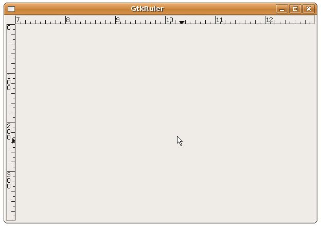

GtkRuler 可以是一個垂直或水平外觀的尺規元件，您可以設定它的上下界，也可以讓它上面的游標跟隨滑鼠的移動，您可以使用gtk_hruler_new()或 gtk_vruler_new()來建立水平或垂直尺規元件，使用gtk_ruler_set_metric()可以設定度量單位，可以設定的值有 GTK_PIXELS（像素）、GTK_INCHES（英吋）、GTK_CENTIMETERS（公釐）。
您可以設定GtkRuler的範圍：
void gtk_ruler_set_range(GtkRuler *ruler,
gdouble lower,
gdouble upper,
gdouble position,
gdouble max_size);
gdouble lower,
gdouble upper,
gdouble position,
gdouble max_size);
lower與upper用來設定尺規的上下界，position設定目前尺規上小游標的顯示位置，max_size則是用來計算尺規上可以顯示刻度及數字的詳細程度時使用，設定越小的數字，尺規刻度或數字會越細，設定越大的數字，尺規刻度或數字範圍會越大。
若要讓尺規上的游標跟隨滑鼠的位置而移動，首先滑鼠移動範圍的元件必須能接受滑鼠移動事件，例如設定GtkWindow接受滑鼠移動事件：
gtk_widget_set_events(window, GDK_POINTER_MOTION_MASK |
GDK_POINTER_MOTION_HINT_MASK);
GDK_POINTER_MOTION_HINT_MASK);
而滑鼠移動的motion_notify_event信號，必須連接到GtkRuler的motion_notify_event函式，例如：
#define EVENT_METHOD(i, x) GTK_WIDGET_GET_CLASS(i)->x
g_signal_connect_swapped(G_OBJECT(window), "motion_notify_event",
G_CALLBACK(EVENT_METHOD(hrule, motion_notify_event)),
hrule);
G_CALLBACK(EVENT_METHOD(hrule, motion_notify_event)),
hrule);
下面的範例示範如何讓GtkRuler跟隨滑鼠在GtkWindow上的移動，GtkRuler的位置則是利用 GtkTable 的放置：
- gtkruler_demo.c
#include <gtk/gtk.h>
#define EVENT_METHOD(i, x) GTK_WIDGET_GET_CLASS(i)->x
int main(int argc, char *argv[]) {
GtkWidget *window;
GtkWidget *table;
GtkWidget *hrule;
GtkWidget *vrule;
gtk_init (&argc, &argv);
window = gtk_window_new(GTK_WINDOW_TOPLEVEL);
gtk_window_set_title(GTK_WINDOW (window), "GtkRuler");
gtk_window_set_default_size(GTK_WINDOW(window), 600, 400);
gtk_widget_set_events(window, GDK_POINTER_MOTION_MASK |
GDK_POINTER_MOTION_HINT_MASK);
table = gtk_table_new (2, 2, FALSE);
gtk_container_add(GTK_CONTAINER(window), table);
hrule = gtk_hruler_new();
gtk_ruler_set_metric(GTK_RULER(hrule), GTK_PIXELS);
gtk_ruler_set_range(GTK_RULER(hrule), 7, 13, 0, 20);
g_signal_connect_swapped(G_OBJECT(window), "motion_notify_event",
G_CALLBACK(EVENT_METHOD(hrule, motion_notify_event)),
hrule);
gtk_table_attach(GTK_TABLE(table), hrule, 1, 2, 0, 1,
GTK_EXPAND|GTK_SHRINK|GTK_FILL, GTK_FILL, 0, 0);
vrule = gtk_vruler_new();
gtk_ruler_set_metric(GTK_RULER(vrule), GTK_PIXELS);
gtk_ruler_set_range(GTK_RULER(vrule), 0, 400, 10, 400);
g_signal_connect_swapped(G_OBJECT(window), "motion_notify_event",
G_CALLBACK(EVENT_METHOD(vrule, motion_notify_event)),
vrule);
gtk_table_attach(GTK_TABLE(table), vrule, 0, 1, 1, 2,
GTK_FILL, GTK_EXPAND|GTK_SHRINK|GTK_FILL, 0, 0);
g_signal_connect(GTK_OBJECT(window), "destroy",
G_CALLBACK(gtk_main_quit), NULL);
gtk_widget_show_all(window);
gtk_main();
return 0;
}一個執行的結果畫面如下所示：
